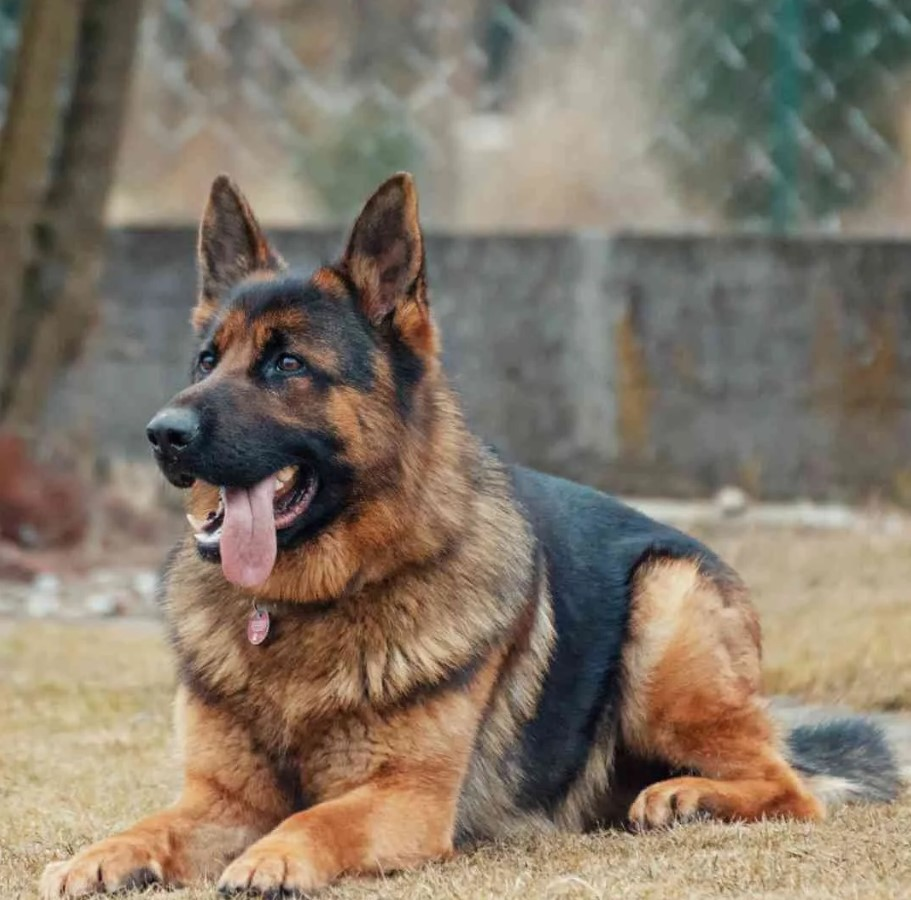
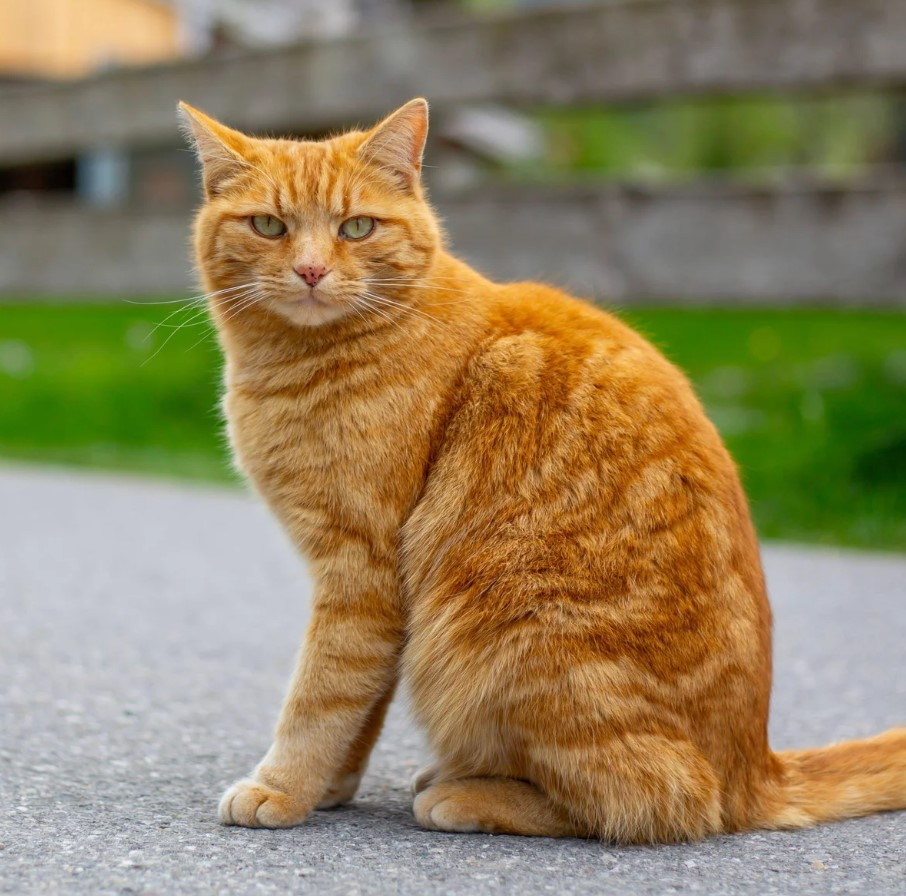
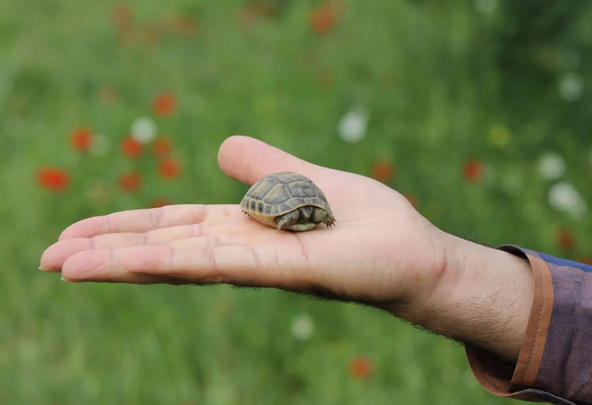
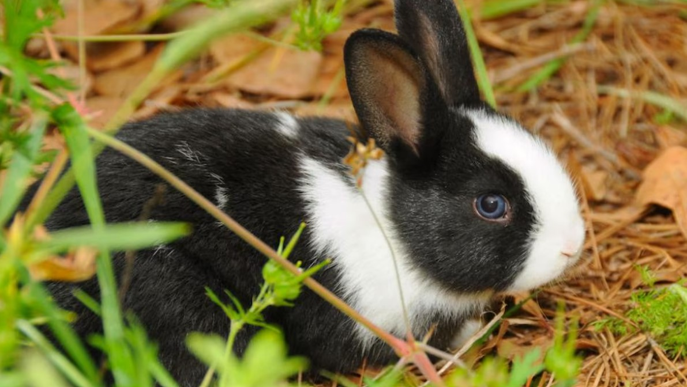
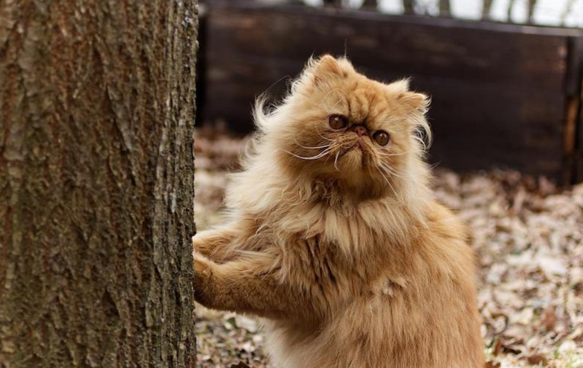

Help reunite pets with their families. Browse reported lost pets below or contact us if you have seen one.

Type: German Shepherd Dog
Last Seen: Glasnevin, Dublin
Date: 12 December 2025
I’ve Seen This Pet



Type: Garfield Cat
Last Seen: St. Patrick Campus, Dublin
Date: 10 December 2025
I’ve Seen This Pet